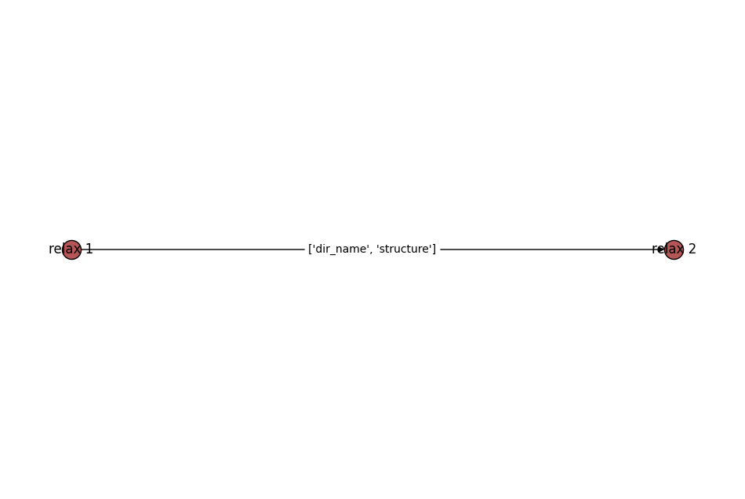

通用工作流
easydft预设了四类工作流,使用时调用easydft.workflow.genwf:
double_relaxrelax2scfscf2nonscfrelax2scf2nonscf
四类工作流的使用方式一致,以double_relax为例, 简易用法:
from easydft.workflow.genwf import GenWF
from pymatgen.core import Structure
structure = Structure.from_file('./Si.vasp')
wf = GenWF(structure)
double_relax = wf.double_relax_flow()
print(double_relax)
double_relax.draw_graph().show()
1. Flow(name='double relax', uuid='f87860c8-b1ab-47fe-a873-36466865de2c')
1.1. Job(name='relax 1', uuid='75d50e26-56f6-4ef6-9256-88425e11af45')
1.2. Job(name='relax 2', uuid='af205718-1278-4ed1-9977-e617acd6ec3a')
可视化工作流: 
当然, 计算最关键的输入参数最好还是要自己设置, 实际使用时可以调用MPRelaxSet或RelaxSetGenerator自定义输出参数:
from easydft.workflow.genwf import GenWF
from pymatgen.core import Structure
from pymatgen.io.vasp.sets import MPRelaxSet
from atomate2.vasp.sets.core import RelaxSetGenerator
structure = Structure.from_file('./Si.vasp')
wf = GenWF(structure)
set1 = MPRelaxSet(user_incar_settings={"EDIFFG": -0.05})
set2 = MPRelaxSet(user_incar_settings={"EDIFFG": -0.01})
# set1 = RelaxSetGenerator(user_incar_settings={"EDIFFG": -0.05})
# set2 = RelaxSetGenerator(user_incar_settings={"EDIFFG": -0.01})
double_relax = wf.double_relax_flow(set1=set1, set2=set2)
print(double_relax)
double_relax.draw_graph().show()
构建完工作流之后, 导入SubWF模块可以直接提交任务:
from easydft.workflow.genwf import GenWF, SubWF
from pymatgen.core import Structure
from pymatgen.io.vasp.sets import MPRelaxSet
from atomate2.vasp.sets.core import RelaxSetGenerator
structure = Structure.from_file('./Si.vasp')
wf = GenWF(structure)
set1 = MPRelaxSet(user_incar_settings={"EDIFFG": -0.05})
set2 = MPRelaxSet(user_incar_settings={"EDIFFG": -0.01})
# set1 = RelaxSetGenerator(user_incar_settings={"EDIFFG": -0.05})
# set2 = RelaxSetGenerator(user_incar_settings={"EDIFFG": -0.01})
double_relax = wf.double_relax_flow(set1=set1, set2=set2)
resources = {
"nodes":1,
"ntasks_per_node":4,
"partition":"debug",
"time":"2400:00:00",
"qout_path":"%j.log"
}
jf = SubWF.sub_jfremote(flow=double_relax, project='your_project', resources=resources)
resources即在集群上计算需要调用的资源, 上述是在slurm作业系统上进行提交, 更多系统可参考jobflow-remote官网.